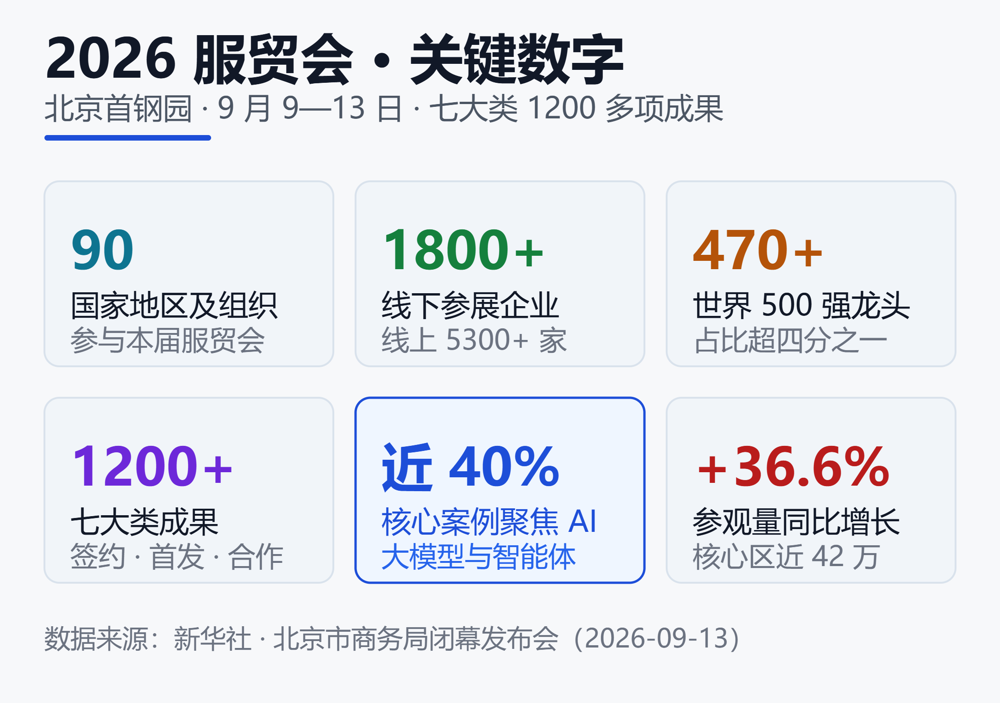

服贸会 2026 落幕：1200 项成果背后，中国服务贸易的 AI 转向
序言：一场展会的 AI 含量
2026 年 9 月 13 日，北京首钢园。为期五天的中国国际服务贸易交易会（CIFTIS，服贸会）落下帷幕，官方给出的成绩单是：7 大类 1200 多项成果。
但比总量更值得注意的是一个结构性数字。今年服贸会的「中国服务」核心展区，首次集中展出了覆盖服务贸易全部 12 个领域的 140 多个创新案例，其中近四成聚焦人工智能、大模型和智能体。
一个以「服务贸易」为主题、办了十余年的国家级展会，把近四成的创新案例分配给了 AI。这不是某家科技公司的发布会，而是一个观察中国服务业走向的窗口。它释放的信号很直接：AI 正在成为服务贸易升级的主引擎。
这篇文章不复述展会流水账，而是回答一个问题——透过 2026 服贸会，中国服务贸易的 AI 转向到底走到了哪一步？
一、先看基本盘：1200 项成果是什么量级
在谈 AI 之前，先把这届服贸会的规模摆清楚，这样才知道「近四成 AI」的分母有多大。

上图是这届服贸会的关键数字。综合新华社与北京市商务局在闭幕发布会上的口径，核心数据如下：
| 维度 | 数据 |
|---|---|
| 参与方 | 90 个国家地区及组织 |
| 线下参展企业 | 1800 多家 |
| 世界 500 强及龙头 | 470 多家 |
| 七大类成果 | 1200 多项 |
| 新产品新成果 | 200 多项 |
| 核心区参观人次 | 近 42 万 |
几个点值得展开。
一是世界 500 强的密度。1800 多家线下参展企业里，有 470 多家是世界 500 强或行业龙头，占比超过四分之一。这个比例在国内展会里并不常见，说明服贸会仍是跨国企业观察中国服务市场的重要接口。
二是首发首展的分量。展会期间共发布 200 多项新产品、新技术、新成果，其中 100 多项是全球首发或中国首发；仅 9 月 11 日一天，就有 37 家企业机构集中发布了 81 项新成果。首发密度本身，是技术活跃度的一个侧写。
三是客流的增速。截至 9 月 13 日中午，核心区参观量已近 42 万人次，同比增长 36.6%。人愿意来，说明展台上的东西确实有可看、可体验的成分，而不只是签约仪式。
还有一个容易被忽略的背景：2026 年是「十五五」规划（2026—2030）的开局之年，这是规划期内的首届服贸会。开局之年的展会往往带有「定调」意味，而这一届定的调，AI 的权重明显更高。
二、最硬的信号：近四成创新案例押注 AI
前面反复提到的「近四成」，是本届服贸会最值得记住的一个数字，也是本文的核心论据。
服贸会官方在核心展区首次设置了「中国服务」案例集中展示，一共 140 多个创新案例，覆盖服务贸易的全部 12 个领域。官方明确指出，这些案例中近 40% 集中在人工智能、大模型和智能体方向。
为什么这个数字重要？因为它不是媒体统计，而是主办方的主动策展选择。展什么、不展什么，反映的是官方对「什么代表中国服务业未来」的判断。当近四成名额给了 AI，等于是在说：服务贸易的下一段增长，主要靠 AI 驱动。
把它和另外两个数据放在一起看，信号就更清晰了。
第一，金融服务展区今年以「智焕新生 金融聚力」为主题，40 多家头部金融机构集中展示 AI 落地成果，并且和它们赋能的科创企业同台参展，覆盖算力芯片、人形机器人等前沿赛道。金融是服务贸易里最保守、最看重稳定性的板块之一，连它都把主题定成「智焕新生」，可见 AI 渗透之深。
第二，展会现场随处可见具身智能演示——机器人做咖啡、仿生机器鱼、机器人弹奏键盘。这些看起来像「表演」的场景，恰恰说明具身智能已经从论文和实验室，走到了可以公开体验的成熟度。
关于具身智能的技术底座——视觉-语言-动作模型（VLA）如何让机器人「看懂画面、听懂人话、动手做事」，可以参考本站的《VLA 模型深度调研：主流架构、训练范式与产业落地（2026）》。
三、具身智能走进展馆：一只「会思考」的推拿机器人
如果要从这届服贸会里挑一个最能代表 AI 转向的案例，北京中医药大学的具身智能推拿机器人是很合适的样本。它是本届服贸会的全球首发首展，也是理解「AI + 传统服务业」的一把钥匙。
这台机器人高约一米五，有人形轮廓，双手关节分明。它的手臂按照人体肩、肘、腕的活动方式设计，能复现推拿专家足底发力、腰胯协同、全身施力的专业模式。
但据研发团队介绍，它最特别的地方不在手上，而在「脑子」里。
按照北京中医药大学教授闫聪的说法，团队的做法分两步：先打造一套专家大模型系统，让它深度学习多位名老中医的推拿手法、辨证思路和施治方案，积累海量中医推拿临床知识库；有了这套大模型，再去训练机器人的具体动作。
这个「先大模型、后动作」的路径，正是当前具身智能的主流范式：用一个懂知识的模型做大脑，用一套灵巧的本体做手脚。机器人还能在推拿过程中实时识别被推拿者的身体反应，据此调整力道和手法——这一步「感知—反馈—调整」的闭环，是它区别于普通机械臂的关键。
团队给出的方向也很有意思：让它走进家庭，甚至随海外中医中心走出国门，成为传承名医推拿手法的载体。这句话点出了「AI + 服务贸易」的一个真实价值——把稀缺的、依赖老师傅经验的服务能力，通过模型固化下来、批量复制、跨境输出。这正是服务贸易升级最想要的东西。
想进一步了解人形机器人赛道的产业格局与投资逻辑，可以读《人形机器人 2026：中美投资路径与产业格局对比》。
四、AI + 金融：数字人民币与一杯「碰一碰」的咖啡
金融服务展区是这届服贸会 AI 含量最高的板块之一，也最能说明 AI 已经从「展示概念」进入「日常可用」。
最有画面感的一个场景，是建设银行展区的数字人民币咖啡机。观众扫码、轻点、支付、出杯，几秒钟一杯咖啡就用数字人民币完成结算，「手机一碰就完事」，比扫码还快。
这个小场景背后其实是两条技术线的叠加：一是数字人民币的支付基础设施，二是无人零售场景里的自动化与识别能力。它不炫技，但恰恰说明支付这类高频服务正在被重新组织。
关于支付这一层正在发生的更大变化——AI 智能体如何自主发起和完成支付，中美走了哪两条路，可以参考《智能体支付：中美两条路径的分野（2026）》。
金融展区的另一个看点是「同台参展」的组织方式：40 多家头部金融机构，和它们投资、赋能的科创企业一起出现在展台上，覆盖算力芯片、人形机器人等赛道。这透露出一个趋势——金融机构不再只是资金提供方，而是越来越深地介入 AI 产业链本身，从「投钱」变成「投能力」。
五、从「卖产品」到「卖技术」：一次结构性转向
把前面的案例串起来看，2026 服贸会真正想说的，其实是中国服务贸易的一次结构性转向：从人力密集、资源密集，转向技术密集、知识密集。
过去很长一段时间，中国服务贸易的强项在旅游、运输、建筑承包这类偏「体力」和「规模」的领域。而这届服贸会展台上的主角，换成了大模型、智能体、具身智能、数字沉浸展、AI 金融——这些都是靠知识和技术产生溢价的服务。
这种转向有它的现实逻辑。服务贸易升级最难的地方，在于「优质服务能力」往往绑定在具体的人身上——名医的手法、专家的经验、老师傅的手艺，难以规模化、难以出口。而 AI 大模型提供了一条把这些能力抽取、固化、复制的路径。推拿机器人是这个逻辑的具象化：它试图把名老中医的手法变成可批量部署、可跨境输出的服务产品。
文旅领域也在发生类似的事。北京画院带来的「一花一世界——齐白石艺术数字沉浸展」在服贸会全球首发，用 360 度数字影像把传统书画变成可沉浸体验的空间。据现场介绍，数字艺术语言吸引了更多年轻观众和亲子家庭走进美术馆——这本质上是用数字技术，把「文化服务」的受众和体验方式重新做了一遍。
服务贸易的竞争力，正在从「有多少人、多少资源」，变成「有多强的模型、多少数据、多深的场景理解」。这才是「近四成 AI」这个数字的深层含义。
六、冷静看：展台繁荣不等于商业化落地
热闹之外，也需要一点冷静。服贸会是一个「秀场」，展台上能跑通的演示，和能在真实商业环境里稳定盈利，中间还隔着不小的距离。
第一，首发首展 ≠ 规模化落地。100 多项全球或中国首发很亮眼，但首发意味着「刚出来」，多数还没经过大规模真实场景的检验。具身智能尤其如此——展台上做咖啡、捏肩膀是受控环境，真正进入家庭、进入产线要面对的复杂度是另一个量级。
第二，服务型机器人的成本与安全门槛仍高。像推拿机器人这类直接接触人体的设备，要走进家庭，绕不开安全认证、责任界定、成本控制这几道关。演示阶段可以只谈体验，商用阶段必须谈可靠性。
第三，「近四成 AI」是策展选择，不完全等于市场结构。官方在核心展区把近四成名额给 AI，反映的是政策与产业的期待方向；真实的服务贸易营收里，传统板块的占比短期内仍会更大。方向和现状，要分开看。
关于 AI Agent 从展示走向真实生产环境时，那些容易被低估的治理与隐性成本，本站有专门讨论：《AI Agent 的治理与可观测性：那些被低估的隐性成本》。
小结
2026 服贸会的 1200 项成果里，最该被记住的不是总量，而是「核心展区近四成创新案例押注 AI」这个结构性信号。它由三条证据支撑：官方策展把近四成名额给了 AI、大模型和智能体；金融展区以「智焕新生」为主题、40 多家机构集中秀 AI 落地；具身智能从实验室走进展馆，出现了推拿机器人这样「先大模型、后动作」的成熟样本。
这三条证据指向同一个判断：中国服务贸易正在从人力和资源密集，转向技术和知识密集，而 AI 是这一轮升级的主引擎。
但也要清醒——展台繁荣不等于商业化落地，首发不等于规模化，策展比例不等于市场结构。服贸会给出的是方向，而方向兑现成营收，还需要时间和真实场景的检验。对关注 AI 落地的人来说，值得盯住的不是明年展台上又多了几台机器人，而是今年这些首发的案例，有多少能在一年后真正跑进家庭、产线和跨境服务里。
免责声明
本文基于公开报道与官方发布信息整理，仅代表作者个人观点，不构成任何投资建议或商业决策依据。文中涉及的企业、产品、数据以官方最新披露为准。市场有风险，决策需谨慎。
参考来源
- 新华网 —— Poster | 2026 CIFTIS in Numbers
- 新华网 —— 在服贸会上"看见未来"
- China Daily —— Highlights abound at China's trade in services fair
- People's Daily —— Major trade fair deepens consensus on global services cooperation
- CGTN —— 2026 CIFTIS shows China's shift from products to tech-driven services
- ecns.cn —— CIFTIS draws global participants, yields more than 1,200 outcomes
- China.org.cn —— Servicios chinos se dan a conocer en la CIFTIS 2026
相关阅读
- VLA 模型深度调研：主流架构、训练范式与产业落地（2026）
- 人形机器人 2026：中美投资路径与产业格局对比
- 智能体支付：中美两条路径的分野（2026）
- AI Agent 的治理与可观测性：那些被低估的隐性成本
推荐搭配装备
善其事，利其器。以下硬件能最大化你的AI体验👇
🔗 通过以上链接购买可支持本站持续运营 🙏